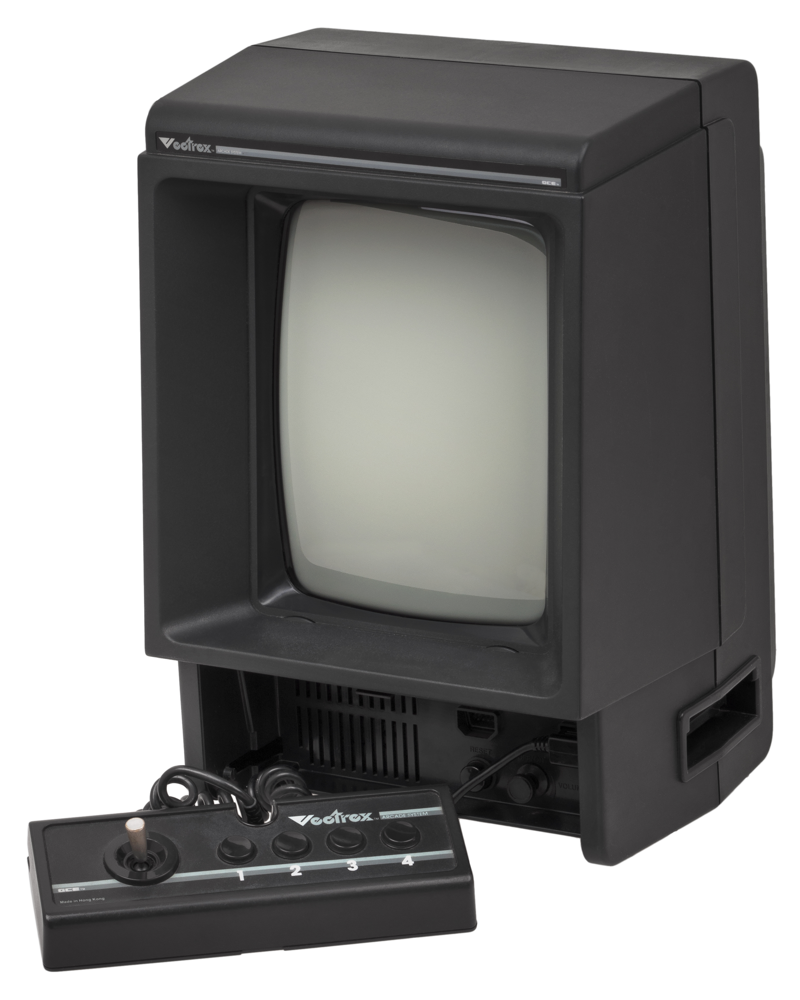
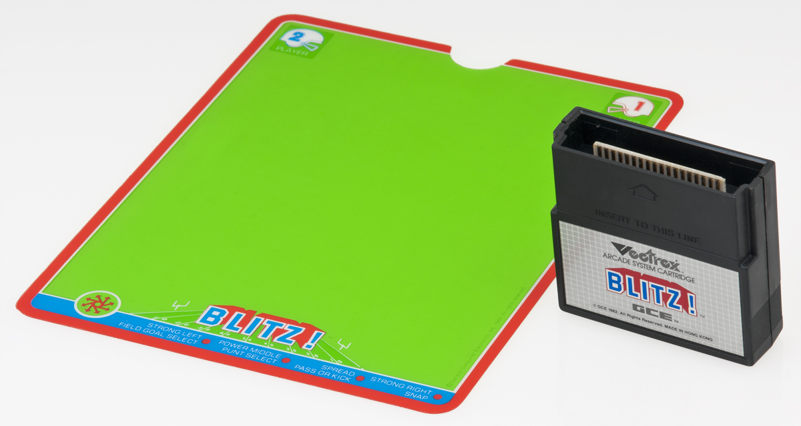

Vectrex
The only mass-produced home console with a vector CRT — and each game shipped with a translucent color overlay you snapped onto the screen and aligned by eye

Overview
The Vectrex, released by General Consumer Electronics in 1982, is unique among home video-game consoles in that it contains its own display: a portrait-oriented monochrome vector CRT that draws sharp, bright lines rather than the raster grids of a television. Because the tube produced only one colour, Vectrex games arrived with a translucent cel overlay sized to the screen, printed with colour fields and scored with tabs that snapped into the console's bezel. The player, before each session, physically placed the overlay over the glass and aligned it by eye so the printed colour zones matched the line drawings underneath — an act of manual calibration that no other console demanded. The controller stows in a recess in the base, and the whole unit is a heavy, self-contained object about the size of a small TV.
Deep dive
Instead of scanning a fixed raster, the Vectrex's CRT steered its beam directly from vector to vector, producing bright, aliasing-free lines and the distinctive glow of arcade vector games like Asteroids. This is why it needed its own monitor: a standard television could not resolve a vector signal, so the console and display had to be one device.
Colour came from a printed cel, not the tube. Each cartridge's overlay was cut with tabs at the corners that pressed into slots around the screen bezel; the player positioned it by hand over the glow and checked that its coloured regions lined up with the always-single-colour graphics. It is a rare consumer interface where the user is asked to complete the display themselves, and it makes every play session begin with a small act of physical alignment.
Engineered by Smith Engineering with John Ross and Jay Smith III. A cartridge slot, the fold-in controller, and the integrated display made it a self-contained machine. GCE was acquired by Milton Bradley in 1983, and the Vectrex was discontinued in 1984 amid the North American video-game crash — though its vector hardware and the light pen, 3-D Imager, and other peripherals have given it a long afterlife among collectors.
The Vectrex is the museum's only exhibit whose display technology forces a physical, user-performed calibration every time it is used. It collapses console, monitor, and colour filter into one object, and it demonstrates that colour and clarity can be delivered by the user's own hands rather than by the electronics — an interface idea almost no other product was willing to try.
Team & pioneers
- General Consumer Electronics (GCE). Manufactured and marketed the Vectrex from 1982; acquired by Milton Bradley in 1983.
- Smith Engineering. The development studio behind the Vectrex's vector hardware and software.
- John Ross. Engineer associated with the Vectrex design and its peripherals.
- Jay Smith III. Designer/engineer credited with the Vectrex system design.
Media
